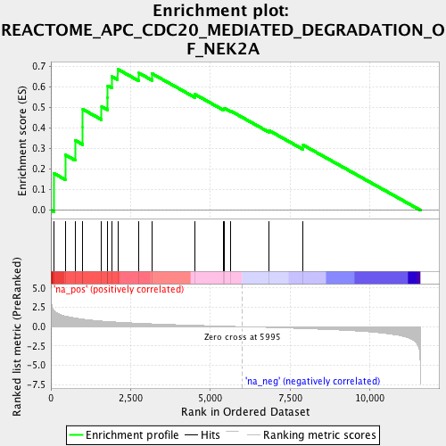
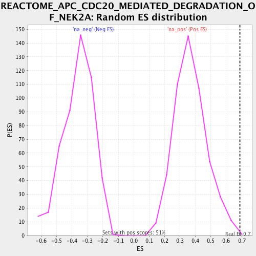

| | | Dataset | RG_DM |
| Phenotype | NoPhenotypeAvailable |
| Upregulated in class | na_pos |
| GeneSet | REACTOME_APC_CDC20_MEDIATED_DEGRADATION_OF_NEK2A |
| Enrichment Score (ES) | 0.68740803 |
| Normalized Enrichment Score (NES) | 1.8598803 |
| Nominal p-value | 0.0019646366 |
| FDR q-value | 0.047060937 |
| FWER p-Value | 0.671 |
Table: GSEA Results Summary

Fig 1: Enrichment plot: REACTOME_APC_CDC20_MEDIATED_DEGRADATION_OF_NEK2A
Profile of the Running ES Score & Positions of GeneSet Members on the Rank Ordered List

Fig 2: REACTOME_APC_CDC20_MEDIATED_DEGRADATION_OF_NEK2A: Random ES distribution
Gene set null distribution of ES for REACTOME_APC_CDC20_MEDIATED_DEGRADATION_OF_NEK2A